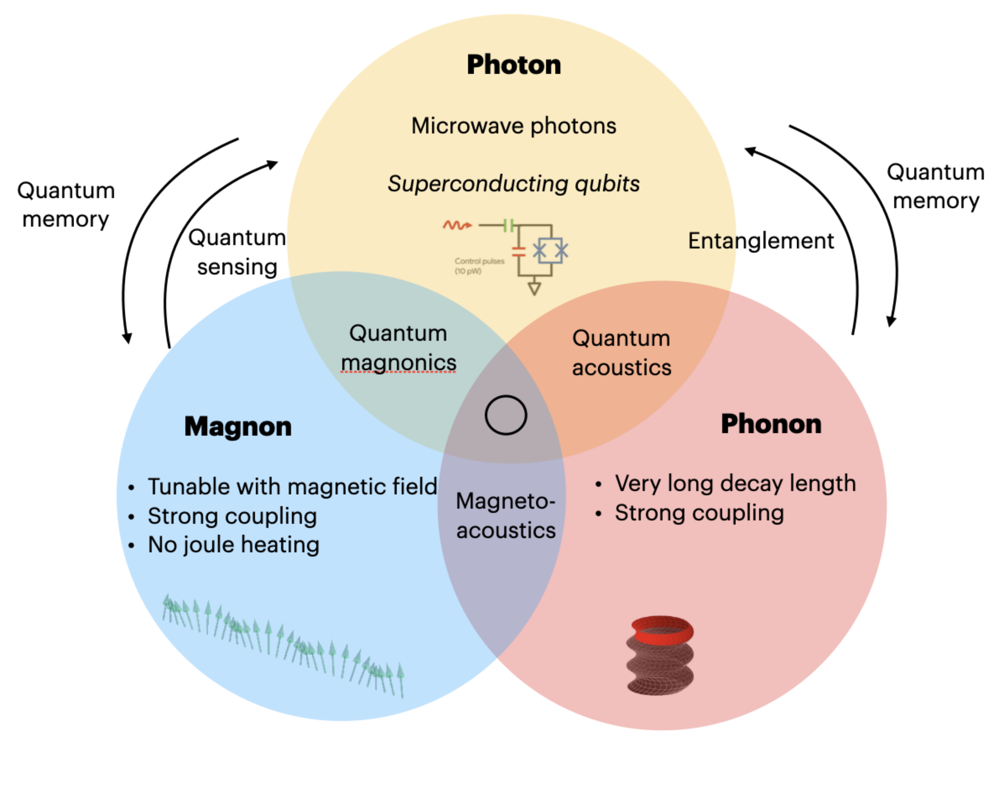
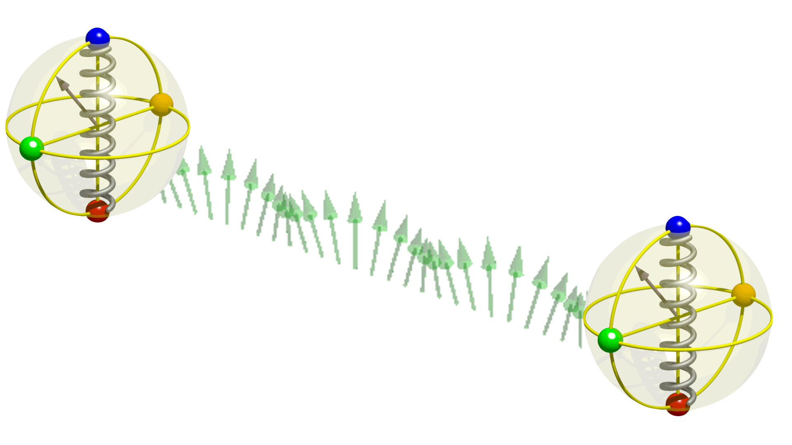

M² Lab | Microwave Magnonics Lab
We advance microwave magnonics for next-generation computing and quantum information platforms.
Spin-phonon hybrid systems operate in the GHz microwave frequency range. This makes them ideal for combining with superconducting quantum devices. The interplay among these three quasiparticles (magnons, phonons, and superconducting qubits) in the GHz regime are illustrated above. The ultra-low power characteristics and magnetic field tunability of magnons can be combined with superconducting qubits. This can be useful for quantum sensing applications. The long coherence times of phonons can be harnessed for developing quantum memories. Ultimately, we envision creating an all-microwave platform for quantum microwave communication.
Explore Our Research Spring 2025: Courses in Electromagnetism, Math Physics, and Thermal Physics underway.